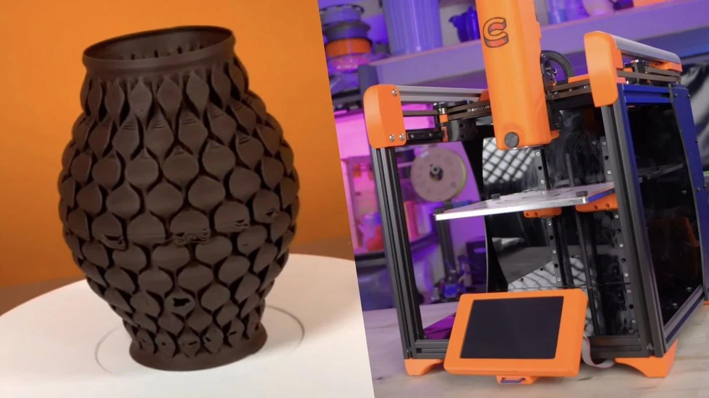
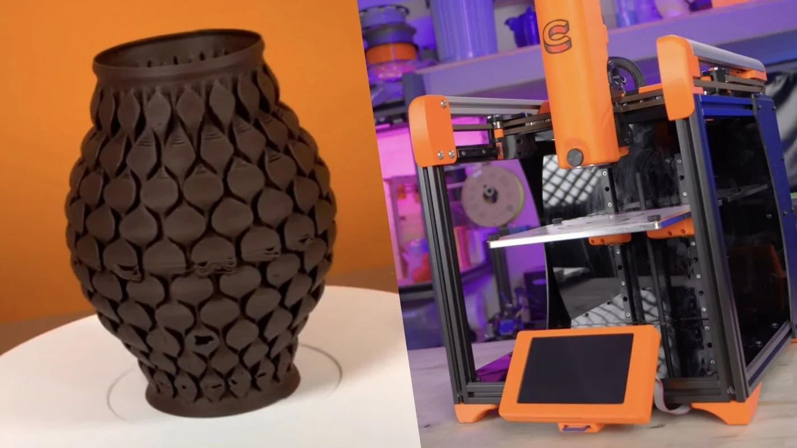

Stage de 2ème année au FABLAB H3O
Présentation de l'entreprise

L'impression 3D est une technologie en constante évolution qui a révolutionné la façon dont nous fabriquons des objets. Elle permet de créer des objets en trois dimensions en superposant des couches de matériau, ce qui permet de produire des pièces complexes à partir de modèles numériques
La diversification des matériaux : Les matériaux d'impression 3D sont de plus en plus variés et sophistiqués. Les plastiques et les métaux sont les plus couramment utilisés, mais des matériaux tels que la céramique, le verre, le bois et même le chocolat peuvent maintenant être imprimés en 3D. Cette diversification des matériaux ouvre la voie à de nouvelles applications pour l'impression 3D, notamment dans le domaine médical ou alimentaire.
 


L'impression 3D à grande échelle : Les technologies d'impression 3D grand format se développent également, permettant l'impression d'objets de grande taille pour des applications telles que l'architecture et la construction. Des imprimantes 3D géantes peuvent maintenant imprimer des bâtiments entiers, comme la première maison imprimée en 3D aux Pays-Bas.